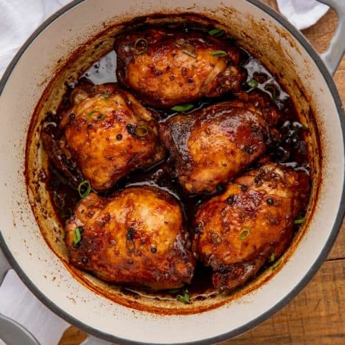

Chicken Adobo Recipe

Description
Filipino cuisine's Chicken Adobo is sour, salty, sweet, and hot. It only takes a few basic ingredients to prepare this dish. It will definitely become a household favorite!
Ingredients
- 2 tablespoons vegetable oil
- 1 (3 pound) chicken, cut into pieces
- 1 large onion, quartered and sliced
- 2 tablespoons minced garlic
- ⅔ cup low sodium soy sauce
- ⅓ cup white vinegar
- 1 tablespoon garlic powder
- 2 teaspoons black pepper
- 1 bay leaf
Steps
- Using a large skillet over medium-high heat, warm the vegetable oil. Cook chicken pieces for 2 to 3 minutes on each side, or until golden brown. Place the chicken on a platter and reserve.
- Cook the onion and garlic in the skillet for about 6 minutes, or until they are tender and browned. Add the vinegar and soy sauce, then season with the bay leaf, black pepper, and garlic powder.
- Put the chicken back in the pan and crank the heat up to high. Reduce heat to medium-low, cover, and simmer for 35 to 40 minutes, or until chicken is cooked through.